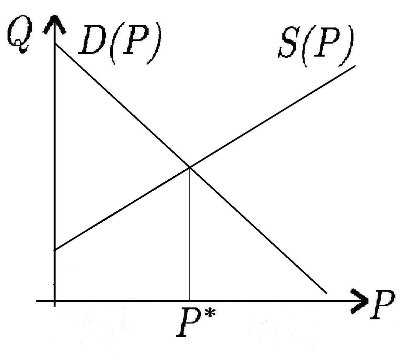
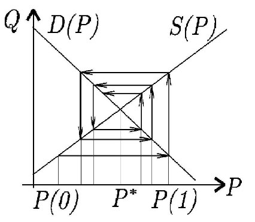
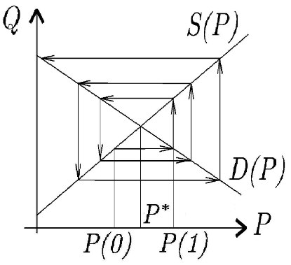
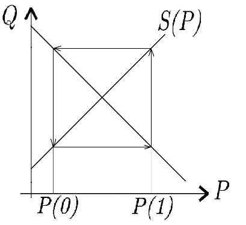

\(\textbf{Разностным уравнением n-го порядка}\) называется уравнение вида \[\begin{equation}\label{4} x(t+n) = V(t, x(t), x(t+1),..., x(t+n-1)), \tag{4} \end{equation} \] где \(t\ \in N\)
Уравнение \[x(t+4) = x(t+2)\] не следует считать уравнением 4-го порядка. После замены времени \(\tau = t+2\) получим уравнение 2-го порядка \[x(\tau + 2) = x(\tau).\]
\(\textbf{Решением}\) разностного уравнения называется всякая последовательность \(\varphi(t)\), для которой \[\varphi(t+n) = V(t, \varphi(t), \varphi(t+1),..., \varphi(t+n-1))\] при всех \(t \in N\)
\(\textbf{Положением равновесия }\) для разностного уравнения называется решение \(\varphi(t)\equiv_{t \in N}x_0 .\)
Существование и единственность решения разностного уравнения.
Для любого набора начальных значений \((u_1, u_2,..., u_n) \in R^n\) существует единственное решение уравнения \(n\)-го порядка (\ref{4}), удовлетворяющее начальным условиям \(\varphi(1) = u_1, \varphi(2) = u_2,..., \varphi(n) = u_n.\)
Индукцией по \(t,\;t\in N\)
Арифметическая прогрессия.
Пусть \(x(t)\) - элемент арифметической прогрессии с номером \(t\), а \(d\) - разность прогрессии. Тогда \[x(t+1) = x(t) + d\] разностное уравнение 1-го порядка, не имеющее при \(d\neq 0\) положения равновесия.
Геометрическая прогрессия со знаменателем \(q\) определяется разностным уравнением 1-го порядка \[x(t+1) = qx(t)\]. Число \(x_0\) - положение равновесия \(\Leftrightarrow\;x_0=qx_0\;\Leftrightarrow\;(q=1)\;или\;(x_0=0)\)
Рост процентного вклада. Пусть \(x(t)\) - величина вклада после \(t\) месяцев, \(R\) - месячная процентная ставка. Тогда \[x(t+1) = (1 + \frac{R}{100})x(t)\]
Рост процентного вклада с регулярными взносами \[x(t+1) = (1 + \frac{R}{100})x(t) + P,\] где \(P\) - величина ежемесячного взноса.
Величина долга по займу с регулярными выплатами \[x(t+1) = (1 + \frac{R}{100})x(t) - P,\] где \(P\) - размер выплат.
Последовательность Фибоначчи \[1, 1, 2, 3, 5, 8,...\] удовлетворяет разностному уравнению 2-го порядка \[x(t+2) = x(t+1) + x(t)\] и начальным условиям \[x(1) = 1, x(2) = 1.\]
Паутинообразная модель рынка.
Модель рыночного регулирования цены на рынке одного товара.
Обозначения"
\(P(t)\) - цена товара, \(D(t)\) - величина спроса на товар, \(S(t)\) - величина предложения товара в период \(t\).
Предположения:
1) функция спроса линейно зависит от текущей цены товара \[D(t) = \alpha + AP(t),\] где \(A < 0,\;\alpha\) - постоянные параметры;
2) функция предложения линейно зависит от цены на товар за предыдущий период \[S(t) = \beta + BP(t-1),\] где \(B>0, \beta\) - постоянные параметры(предложение сегодня складывается на основе вчерашних цен);
3) цена каждого периода устанавливается так, чтобы уравнять спрос и предложение \[D(t) = S(t);\]
4) известна начальная цена \(P(0)\)
Отсюда \[\alpha + AP(t) = \beta + BP(t-1)\] или \[P(t) = \frac{B}{A}P(t-1) + \frac{\beta - \alpha}{A}.\]
Это линейное неоднородное разностное уравнение 1-го порядка с постоянными коэффициентами.
Графическая интерпретация процесса рыночного регулирования цены.
В системе координат \((P,Q)\) прямые \(D = \alpha + AP\) и \(S = \beta + BP\)
Точка пересечения прямых соответствует положению равновесия на рынке - равновесной цене \(P^*\)


Если \(\left | \frac{B}{A} \right | < 1,\) то паутина сходится к точке равновесия, т.е. \(\lim_{t \to \infty} P(t) = P^*\)

В случае \(\left | \frac{B}{A} \right | > 1,\) то паутина расходится.
Колебания цены увеличиваются с каждым новым периодом.

В случае \(\left | \frac{B}{A} \right | = 1\) цена меняется циклически (повторяется через каждые два периода).
Модель делового цикла(Самуэльсона-Хикса) описывает волнообразный характер развития экономики - чередование подъемов и спадов конъюнктуры.
Предположения:
1) Величина потребления в любой период времени является линейной функцией национального дохода за предыдущий период \[C(t) = aY(t-1) + b,\] где \(0<\)\(a<\)1,\(\;b>0\)
(число a - коэффициент склонности к потреблению).
2) Текущий объем инвестиций пропорционален с некоторым коэффициентом приращению национального дохода за предыдущий период \[I(t) = \lambda(Y(t-1) - Y(t-2)),\] \(\lambda\) - коэффициент акселерации. Допускается \(I(t) < 0.\)
3) Выполняется закон сохранения: \[Y(t) = C(t) + I(t).\] В результате получается \[Y(t) = aY(t-1) + b + \lambda(Y(t-1) - Y(t-2))\] или \[Y(t) = (a + \lambda)Y(t-1) - \lambda Y(t-2) + b\] Замена нумерации моментов времени \(\tau = t + 2\). \[Y(\tau+2) = (a+\lambda)Y(\tau+1) - \lambda Y(\tau) + b.\] линейное неоднородное разностное уравнение 2-го порядка с постоянными коэффициентами.